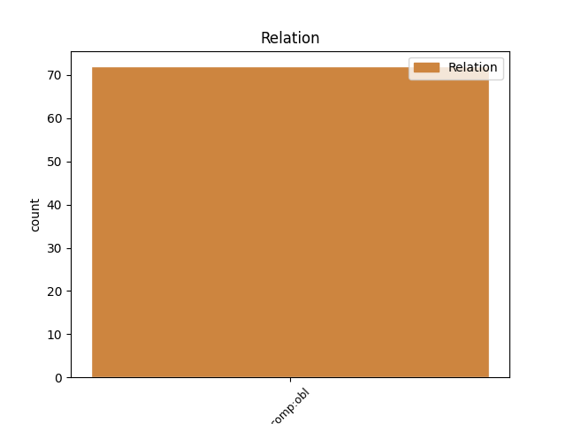
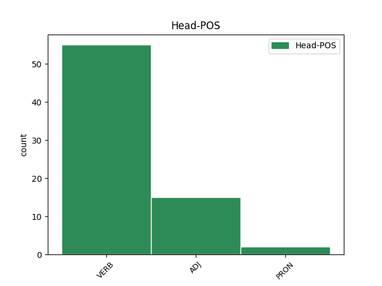
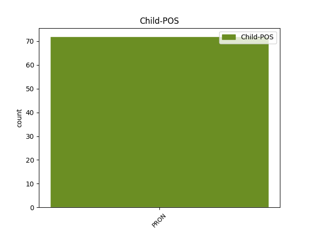

Distribution of features within this leaf



Agreement Rules sorted by frequency.
- When the dependent token is the oblique complements(comp:obl) of the head token, and the head token is VERB and the dependent token is PRON.
1 þaþroh _ _ _ _ 0 _ _ _
2 galagiþs ga-lagjan VERB V- Aspect=Perf|Case=Nom|Gender=Masc|Number=Sing|Strength=Strong|Tense=Past|VerbForm=Part|Voice=Pass 0 _ _ _
3 ist _ _ _ _ 0 _ _ _
4 mis ik PRON Pp Case=Dat|Gender=Masc|Number=Sing|Person=1|PronType=Prs 2 comp:obl _ ref=2TIM_4.8
5 waips _ _ _ _ 0 _ _ _
6 garaihteins _ _ _ _ 0 _ _ _
7 þanei _ _ _ _ 0 _ _ _
8 usgibiþ _ _ _ _ 0 _ _ _
9 mis _ _ _ _ 0 _ _ _
10 frauja _ _ _ _ 0 _ _ _
11 in _ _ _ _ 0 _ _ _
12 jainamma _ _ _ _ 0 _ _ _
13 daga _ _ _ _ 0 _ _ _
14 sa _ _ _ _ 0 _ _ _
15 garaihta _ _ _ _ 0 _ _ _
16 staua _ _ _ _ 0 _ _ _
17 aþþan _ _ _ _ 0 _ _ _
18 ni _ _ _ _ 0 _ _ _
19 þatainei _ _ _ _ 0 _ _ _
20 mis _ _ _ _ 0 _ _ _
21 ak _ _ _ _ 0 _ _ _
22 jah _ _ _ _ 0 _ _ _
23 allaim _ _ _ _ 0 _ _ _
24 þaiei _ _ _ _ 0 _ _ _
25 frijond _ _ _ _ 0 _ _ _
26 qum _ _ _ _ 0 _ _ _
27 is _ _ _ _ 0 _ _ _
1 Jabai _ _ _ _ 0 _ _ _
2 ƕo _ _ _ _ 0 _ _ _
3 nu _ _ _ _ 0 _ _ _
4 gaþrafsteino _ _ _ _ 0 _ _ _
5 in _ _ _ _ 0 _ _ _
6 Xristau _ _ _ _ 0 _ _ _
7 jabai _ _ _ _ 0 _ _ _
8 ƕo _ _ _ _ 0 _ _ _
9 gaþlaihte _ _ _ _ 0 _ _ _
10 friaþwos _ _ _ _ 0 _ _ _
11 jabai _ _ _ _ 0 _ _ _
12 ƕo _ _ _ _ 0 _ _ _
13 gamainduþe _ _ _ _ 0 _ _ _
14 ahmins _ _ _ _ 0 _ _ _
15 jabai _ _ _ _ 0 _ _ _
16 ƕo _ _ _ _ 0 _ _ _
17 mildiþo _ _ _ _ 0 _ _ _
18 jah _ _ _ _ 0 _ _ _
19 gableiþeino _ _ _ _ 0 _ _ _
20 usfulleiþ _ _ _ _ 0 _ _ _
21 meina _ _ _ _ 0 _ _ _
22 fahed _ _ _ _ 0 _ _ _
23 ei _ _ _ _ 0 _ _ _
24 þata _ _ _ _ 0 _ _ _
25 samo _ _ _ _ 0 _ _ _
26 hugjaiþ _ _ _ _ 0 _ _ _
27 þo _ _ _ _ 0 _ _ _
28 samon _ _ _ _ 0 _ _ _
29 friaþwa _ _ _ _ 0 _ _ _
30 habandans _ _ _ _ 0 _ _ _
31 samasaiwalai _ _ _ _ 0 _ _ _
32 samafraþjai _ _ _ _ 0 _ _ _
33 ni _ _ _ _ 0 _ _ _
34 waiht _ _ _ _ 0 _ _ _
35 bi _ _ _ _ 0 _ _ _
36 haifstai _ _ _ _ 0 _ _ _
37 aiþþau _ _ _ _ 0 _ _ _
38 lausai _ _ _ _ 0 _ _ _
39 hauheinai _ _ _ _ 0 _ _ _
40 ak _ _ _ _ 0 _ _ _
41 in _ _ _ _ 0 _ _ _
42 allai _ _ _ _ 0 _ _ _
43 hauneinai _ _ _ _ 0 _ _ _
44 gahugdais _ _ _ _ 0 _ _ _
45 anþar _ _ _ _ 0 _ _ _
46 anþarana _ _ _ _ 0 _ _ _
47 munands _ _ _ _ 0 _ _ _
48 sis sik PRON Pk Case=Dat|Gender=Masc|Number=Sing|Person=3|PronType=Prs|Reflex=Yes 49 comp:obl _ ref=PHIL_2.3
49 auhuman auhuma ADJ A- Case=Acc|Degree=Cmp|Gender=Masc|Number=Sing|Strength=Weak 0 _ _ _
50 ni _ _ _ _ 0 _ _ _
51 þo _ _ _ _ 0 _ _ _
52 seina _ _ _ _ 0 _ _ _
53 ƕarjizuh _ _ _ _ 0 _ _ _
54 mitondans _ _ _ _ 0 _ _ _
55 ak _ _ _ _ 0 _ _ _
56 jah _ _ _ _ 0 _ _ _
57 þo _ _ _ _ 0 _ _ _
58 anþaraize _ _ _ _ 0 _ _ _
59 ƕarjizuh _ _ _ _ 0 _ _ _
Disagree Examples:
1 wesun _ _ _ _ 0 _ _ _
2 uh _ _ _ _ 0 _ _ _
3 þan _ _ _ _ 0 _ _ _
4 jainar _ _ _ _ 0 _ _ _
5 qinons _ _ _ _ 0 _ _ _
6 managos _ _ _ _ 0 _ _ _
7 fairraþro _ _ _ _ 0 _ _ _
8 saiƕandeins _ _ _ _ 0 _ _ _
9 þozei _ _ _ _ 0 _ _ _
10 laistidedun _ _ _ _ 0 _ _ _
11 afar _ _ _ _ 0 _ _ _
12 Iesua _ _ _ _ 0 _ _ _
13 fram _ _ _ _ 0 _ _ _
14 Galeilaia _ _ _ _ 0 _ _ _
15 andbahtjandeins andbahtjan VERB V- Case=Nom|Gender=Fem|Number=Plur|Strength=Weak|Tense=Pres|VerbForm=Part|Voice=Act 0 _ _ _
16 imma is PRON Pp Case=Dat|Gender=Masc|Number=Sing|Person=3|PronType=Prs 15 comp:obl _ ref=MATT_27.55
17 in _ _ _ _ 0 _ _ _
18 þaimei _ _ _ _ 0 _ _ _
19 was _ _ _ _ 0 _ _ _
20 Marja _ _ _ _ 0 _ _ _
21 so _ _ _ _ 0 _ _ _
22 Magdalene _ _ _ _ 0 _ _ _
23 jah _ _ _ _ 0 _ _ _
24 Marja _ _ _ _ 0 _ _ _
25 so _ _ _ _ 0 _ _ _
26 Iakobis _ _ _ _ 0 _ _ _
27 jah _ _ _ _ 0 _ _ _
28 Iosezis _ _ _ _ 0 _ _ _
29 aiþei _ _ _ _ 0 _ _ _
30 jah _ _ _ _ 0 _ _ _
31 aiþei _ _ _ _ 0 _ _ _
32 suniwe _ _ _ _ 0 _ _ _
33 Zaibaidaiaus _ _ _ _ 0 _ _ _
1 ƕa ƕas PRON Pi Case=Nom|Gender=Neut|Number=Sing|PronType=Int 0 _ _ _
2 uns weis PRON Pp Case=Dat|Gender=Fem|Number=Plur|Person=1|PronType=Prs 1 comp:obl _ ref=MARK_1.24
3 jah _ _ _ _ 0 _ _ _
4 þus _ _ _ _ 0 _ _ _
1 izwis jūs PRON Pp Case=Dat|Gender=Fem,Masc|Number=Plur|Person=2|PronType=Prs 2 comp:obl _ ref=MARK_4.11
2 atgiban at-giban VERB V- Aspect=Perf|Case=Nom|Gender=Neut|Number=Sing|Strength=Strong|Tense=Past|VerbForm=Part|Voice=Pass 0 _ _ _
3 ist _ _ _ _ 0 _ _ _
4 kunnan _ _ _ _ 0 _ _ _
5 runa _ _ _ _ 0 _ _ _
6 þiudangardjos _ _ _ _ 0 _ _ _
7 gudis _ _ _ _ 0 _ _ _
8 iþ _ _ _ _ 0 _ _ _
9 jainaim _ _ _ _ 0 _ _ _
10 þaim _ _ _ _ 0 _ _ _
11 uta _ _ _ _ 0 _ _ _
12 in _ _ _ _ 0 _ _ _
13 gajukom _ _ _ _ 0 _ _ _
14 allata _ _ _ _ 0 _ _ _
15 wairþiþ _ _ _ _ 0 _ _ _
16 ei _ _ _ _ 0 _ _ _
17 saiƕandans _ _ _ _ 0 _ _ _
18 saiƕaina _ _ _ _ 0 _ _ _
19 jah _ _ _ _ 0 _ _ _
20 ni _ _ _ _ 0 _ _ _
21 gaumjaina _ _ _ _ 0 _ _ _
22 jah _ _ _ _ 0 _ _ _
23 hausjandans _ _ _ _ 0 _ _ _
24 hausjaina _ _ _ _ 0 _ _ _
25 jah _ _ _ _ 0 _ _ _
26 ni _ _ _ _ 0 _ _ _
27 fraþjaina _ _ _ _ 0 _ _ _
28 ibai _ _ _ _ 0 _ _ _
29 ƕan _ _ _ _ 0 _ _ _
30 gawandjaina _ _ _ _ 0 _ _ _
31 sik _ _ _ _ 0 _ _ _
32 jah _ _ _ _ 0 _ _ _
33 afletaindau _ _ _ _ 0 _ _ _
34 im _ _ _ _ 0 _ _ _
35 frawaurhteis _ _ _ _ 0 _ _ _
1 akei _ _ _ _ 0 _ _ _
2 jabai _ _ _ _ 0 _ _ _
3 mageis _ _ _ _ 0 _ _ _
4 hilp _ _ _ _ 0 _ _ _
5 unsara _ _ _ _ 0 _ _ _
6 gableiþjands ga-bleiþjan VERB V- Case=Nom|Gender=Masc|Number=Sing|Strength=Strong|Tense=Pres|VerbForm=Part|Voice=Act 0 _ _ _
7 unsis weis PRON Pp Case=Dat|Gender=Fem,Masc|Number=Plur|Person=1|PronType=Prs 6 comp:obl _ ref=MARK_9.22
1 iþ _ _ _ _ 0 _ _ _
2 þata _ _ _ _ 0 _ _ _
3 du _ _ _ _ 0 _ _ _
4 sitan _ _ _ _ 0 _ _ _
5 af _ _ _ _ 0 _ _ _
6 taihswon _ _ _ _ 0 _ _ _
7 meinai _ _ _ _ 0 _ _ _
8 aiþþau _ _ _ _ 0 _ _ _
9 af _ _ _ _ 0 _ _ _
10 hleidumein _ _ _ _ 0 _ _ _
11 nist _ _ _ _ 0 _ _ _
12 mein _ _ _ _ 0 _ _ _
13 du _ _ _ _ 0 _ _ _
14 giban _ _ _ _ 0 _ _ _
15 alja _ _ _ _ 0 _ _ _
16 þaimei saei PRON Pr Case=Dat|Gender=Masc|Number=Plur|PronType=Rel 17 comp:obl _ ref=MARK_10.40
17 manwiþ manwjan VERB V- Aspect=Perf|Case=Nom|Gender=Neut|Number=Sing|Strength=Strong|Tense=Past|VerbForm=Part|Voice=Pass 0 _ _ _
18 was _ _ _ _ 0 _ _ _